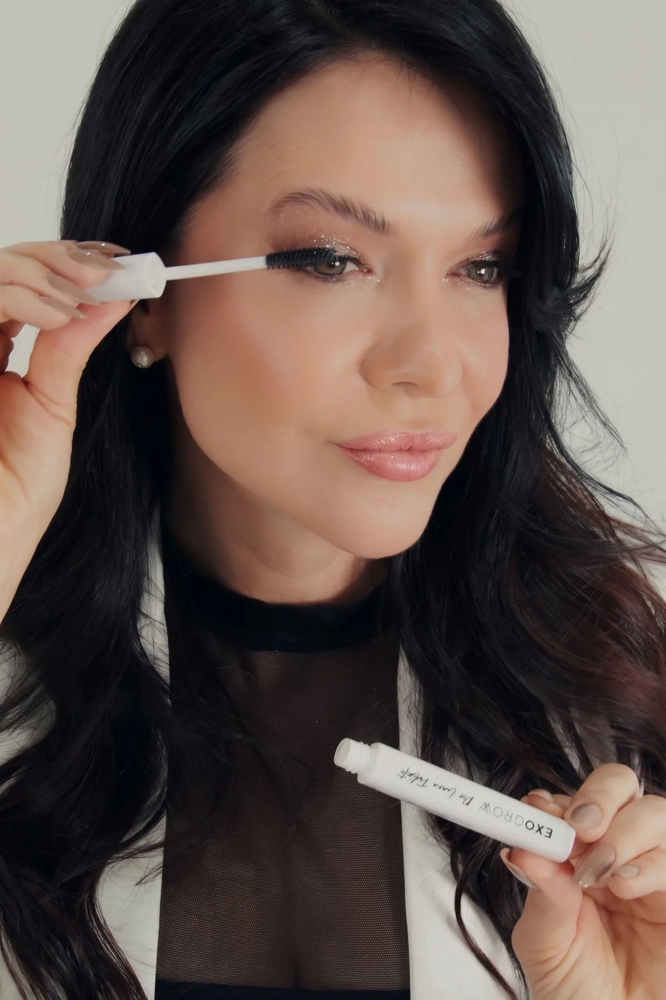
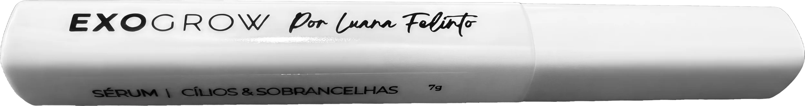

EXOGROW
O sérum de cílios e sobrancelhas da Luana Felinto para os seus fios crescerem mais cheios, mais fortes e seus de verdade.
Lançamento. Uso em casa, uma a duas vezes ao dia. Registrado na Anvisa.
Menos falhas.
Mais fios.
Cabe na sua rotina.
Sobrancelhas e cílios
no mesmo gesto.
A mesma escovinha que passa nos fios da sobrancelha vai na raiz dos cílios. Um produto, uma rotina, os dois emoldurando o seu olhar.
Fortifica.
Fortalece.
Estimula.
Ativos que cuidam do fio da raiz à ponta: hidratação intensa, ação prebiótica e efeito filmógeno, uma película leve que protege o fio enquanto ele cresce.
Abra.
Aplique.
Deixe crescer.
Um minuto do seu dia.
- 01Sobrancelha limpaSem maquiagem e sem resíduo, para o sérum chegar até a raiz.
- 02Uma a duas vezes ao diaPasse a escovinha nas sobrancelhas e, se quiser, na raiz dos cílios.
- 03No mínimo 90 diasÉ o tempo do fio crescer. Para manter o resultado, siga com o uso diário.
Sem pigmento.
Sem fio emprestado.
Nada de desenhar o que o seu pelo pode voltar a fazer. O EXOGROW cuida do fio que é seu.
Fios que voltam
a aparecer.
Clientes da clínica antes e depois do protocolo EXOGROW, com o sérum no cuidado de casa. Sem filtro, sem pigmento, só fio.
 AntesDepois
AntesDepois
 AntesDepois
AntesDepois AntesDepois
AntesDepois
 AntesDepois
AntesDepois
 AntesDepois
AntesDepoisCada organismo responde no seu tempo. Fotos de clientes da Luana Felinto Beauty Clinic, publicadas com autorização.
Da cadeira da clínica
para a sua rotina.
O cuidado de casa que acompanha o protocolo EXOGROW da clínica, agora para você usar todos os dias, no seu tempo.

Assinado por quem cuida
de sobrancelha todo dia.
- 01
A assinatura da Luana
O EXOGROW nasceu dentro da clínica, do protocolo que a Luana aplica em quem chega com sobrancelha rala, falhada ou cansada de tanta pinça. O sérum leva esse cuidado para a sua casa.
- 02
Registrado na Anvisa
Fabricado no Brasil pela Botanik Kosmetics, com processo Anvisa nº 25351231857/2025-87 e farmacêutica responsável. Uso externo, para sobrancelhas e raiz dos cílios.
- 03
O fio é seu
Sem agulha, sem pigmento e sem tempo de recuperação. O sérum trabalha com os fios que você já tem, para que eles cresçam mais fortes e preencham as falhas.
Comece hoje
os seus 90 dias.

Cílios e sobrancelhas mais cheios, com os seus próprios fios.
- Sérum para sobrancelhas e raiz dos cílios
- Escovinha aplicadora de precisão
- Aminoácidos, vitamina E, aloe vera e pantenol
- Orientação da equipe Luana Felinto pelo WhatsApp
Antes de começar.
Em quanto tempo vejo resultado?
O uso indicado é de no mínimo 90 dias, o tempo que o fio leva para crescer. A constância faz a diferença: uma a duas aplicações por dia, todos os dias.
Posso usar nos cílios?
Pode. Aplique na raiz dos cílios, como indicado na embalagem. Evite o contato direto com os olhos e, se acontecer, enxágue com bastante água.
Funciona em qualquer sobrancelha?
Ele estimula os fios que você ainda tem. Falha muito antiga, sem fio nenhum, pede outra conduta. Se tiver dúvida, a equipe avalia o seu caso pelo WhatsApp.
Depois dos 90 dias, eu paro?
Para manter o resultado, a orientação é seguir com o uso diário do sérum.
Como faço para comprar?
Toque em "Quero o meu EXOGROW" e fale com a equipe da clínica pelo WhatsApp. Ela confirma a condição de lançamento e a forma de entrega.